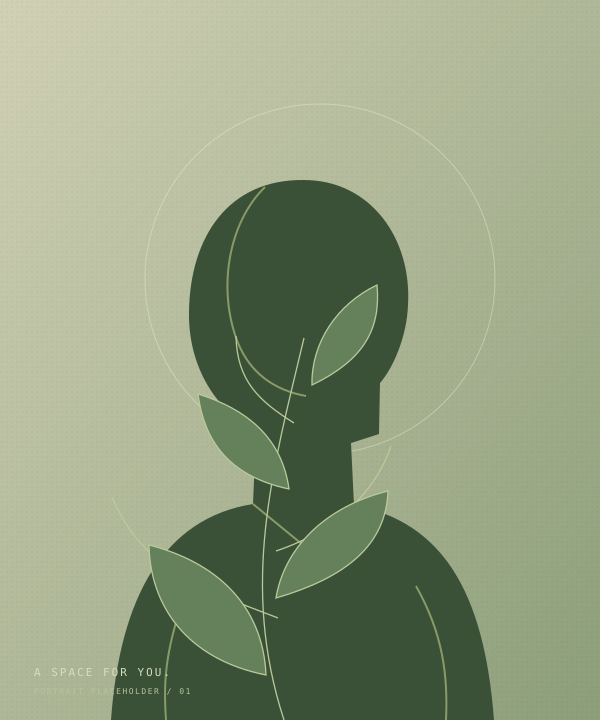

Independent developer & curious observer
Good thingsstart at theroots.
I build thoughtful websites and collect little moments through a lens. A little logic, a little instinct. Always growing.
Begin the climb01 / The trunk 06 m
A little about me.
Rooted in curiosity.
Made with a little care.
A developer by practice.
A creative at heart.

What I can help grow
Tools of the trade
Find me on GitHub02 / The branches 14 m
Things I build.
Ideas take shape.
Then find their own way.
Six sample projects · Your work belongs here
03 / The canopy 23 m
A different lens.
The small things.
The spaces in between.
A collection of borrowed views, until your own arrive.
Sample photography / Unsplash
04 / The treetop 30 m
Room for your
next good idea.
You made it up here.
Let’s grow something.
A new website, a fresh perspective, or the beginning of something good. I’d love to hear about it.
Back to the roots